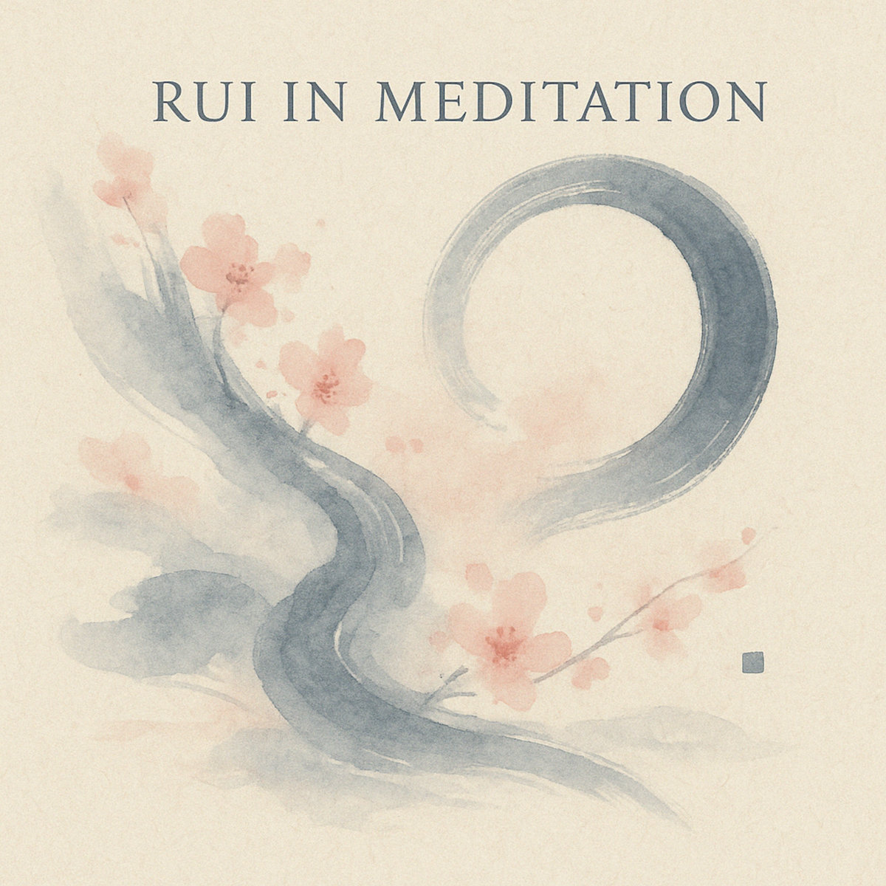

Klavier als Raum, nicht als Bühne.
Rui in Meditation
a live improvisation for piano, guzheng and electronics – with Ruirui Ye (Guzheng) and Joerg Schweinbenz
Ein stiller Dialog.
Zwei Instrumente, eine Begegnung – live improvisiert, sanft verarbeitet.
Rui in Meditation ist ein Stück über Vertrauen, Zuhören, und über den Klang, der bleibt.
Bald exklusiv auf Bandcamp.